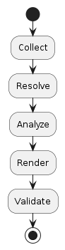

Sphinx-needs Documentation
Sphinx-Needs is an extension for Sphinx, a documentation generator commonly used for Python projects. This extension enhances Sphinx by adding support for managing requirements, specifications, test cases, and other structured information within documentation.
Why Sphinx-needs?
Requirement Management
Traceability
Allows user to filter, link and visualize structured data
Customization
Diagrams and tables generation
Needs Lifescycle

Creating Need items
item must have:
type/directive
unique identifier
title
description
Example of a basic requirement block
A basic example of a need item. |
You can add a need item types in conf.py as well to later use it as desired.
needs_types = [
{
"directive": "can-be-anything-and-is-used-further",
"title": "Project",
"prefix": "P_", # prefix for auto-generated IDs
"style": "square", # style for the type in diagrams
"color": "#BFDD83", # color for the type in diagrams
}]
# example customized need item
.. tutorial:: Example
:id: any
:tags: anything
:layout: clean_l
:image: <path>
:collapse: true
<caption or contents of the item>
Presenting the “TeenTrek,” an autonomous driving car tailored. |
Enforcing Valid need items
The needs_id_required and needs_id_regex to define need ID formats. The needs_statuses, needs_tags and needs_warnings to check for disallowed values. These may emit warnings if values are not as expected.
Item can be referred using the item ID.
Item is Our new car (T_CAR) linked here.
Linking need items
Custom link defined in conf.py
need_extra_links = [
{
"option": "tutorial_required_by",
"incoming": "requires", # text to describe incoming links
"outgoing": "required by", # text to describe outgoing links
"style": "#00AA00", # color for the link in diagrams
},]
Need items with Link
This is the first tutorial. |
This tutorial depends on the first tutorial. |
Importing Need items
importing of test cases to make them easier to read and select
Verify user login with valid and invalid credentials. |
Check if payment gateway handles transactions correctly. |
Ensure profile updates are correctly saved in the database. |
Modifying need items
We can further modify an already existing need item using the needextend. For eg. we can modify an imported item by further adding tags and so on.
.. tutorial:: TUT_001
:id: TUT_001
:tags: tutorial_tests
:status: in_progress
.. needextend:: "tutorial_tests" in tags
:+tutorial_tests: T_RADAR
:status: open
Summarising needs
Summarises all need items. Can use any of them below
needlist - to display a list of need items
needtable - to display a table of need items
needflow - to display a flow diagram of need items
Examples:
{kind=link}
needlist summarising need items
{kind=link}
needtable summarising need items in a table
{kind=link}
Needtable summarizing need items in a datatable.